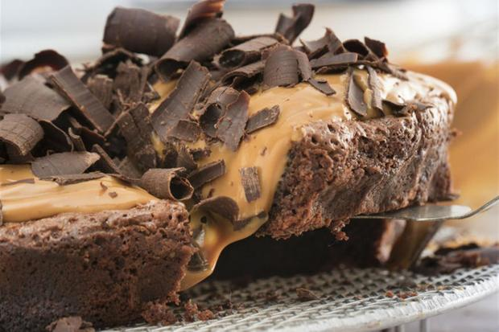

Pan de Jamón

- Ingredientes
- 400 grs de harina de trigo todo uso
- 12 grs de levadura fresca
- 140 grs de agua templada
- 80 l grs de leche íquida
- 10 grs de mantequilla
- 1 huevo
- 8 grs de sal
- 20 grs de azúcar
- 250 grs de jamón planchado
- Pasas y aceitunas al gusto
Preparación
Pon la harina en un bowl haciendo un volcán. En un borde de este volcán coloca el azúcar y la sal y en el borde contrario la levadura. Activa la levadura con el agua y deja reposar por diez minutos. Agrega el huevo y la leche. Posteriormente mezcla todos los ingredientes amasando hasta obtener una masa lisa.Añade la mantequilla hasta integrar, luego lleva la masa a un bowl con un poquito de harina en la base (para que no se pegue la masa) y deja reposar en un lugar tibio y sin corrientes de aire hasta que doble su tamaño (a esto se le llama "leudar").Al leudar, saca la masa del bowl y desgasifícala aplanándola un poco con las manos. Estira la masa sobre una mesa ligeramente enharinada con ayuda de un rodillo.Pon una capa de jamón sobre la masa, y si gustas, unas tiras de tocineta ahumada. Encima del jamón pon las pasas y aceitunas. Dale forma al pan enrollándolo. Cierra el borde y dóblalo hacia abajo haciendo presión para que selle bien y no se salga el relleno. -Pon la masa en una bandeja de horno y deja leudar nuevamente hasta que doble su tamaño. Barniza con un poco de huevo batido mezclado con agua.- Hornea por unos 20 minutos a 180ºC o hasta que doren los panes.
Duración: 80 min
Torta bomba de dulce de leche

- Ingredientes
- 150g de chocolate semiamargo
- 200g de manteca
- 1 taza de azúcar
- 4 huevos
- Para la cobertura:
- 1 ½ pote de Dulce de Leche Repostero
- 1 pote de Queso Crema
- Rulos de chocolate para decorar
Preparación
Derretir el chocolate junto con la manteca. Agregar la taza de azúcar y luego agregar uno a uno los huevos. Mezclar bien hasta unir todos los ingredientes. Enmantecar y forrar con papel aluminio la base de un molde de 22cm.Cocinar en horno precalentado a 200° C por 30 minutos.Una vez cocida la base de chocolate, dejar reposar 15 minutos y desmoldar. Dejar enfriar.Para la cobertura, mezclar con movimientos envolventes el queso crema con el dulce de leche repostero y llevar no menos de dos horas a la heladera.Cubrir la torta con la crema de queso crema y dulce de leche.Decorar con rulos de chocolate o hilos de chocolate.
Duración: 60 min
Paella De Marisco
- Ingredientes
- 2 tazas de arroz con 4 tazas de caldo de gambas
- ½ kg de calamares y ½ kg de gambas frescas
- 1 puñado de conchas de mar almejas y mejillones
- 1 cebolla con 1 tomate mediano
- ½ pimiento rojo
- 2 dientes de ajo
- ½ taza de guisantes
- 1 ramo de hojas de perejil fresco
- Aceite de oliva, Sal y Pimienta al gusto
- Colorante amarillo ó algunas hebras de azafrán
Preparación
Limpia y pela las gambas. Usa las conchas y cabeza para hacer caldo. Resérvalo.
También limpia los calamares y pícalos en ruedas.Limpia también las conchas de mar con abundante agua para que suelten cualquier residuo de arena.En una paellera, ó sartén muy grande y profunda, sofríe en aceite de oliva, la cebolla, el ajo, pimiento y tomate picados en cuadritos pequeños. Agrégale un poco de pimienta y sal.
Pon los calamares y luego las conchas de mar. Deja que se cocinen unos minutos. Verás que comienza a hacerse un caldo, esto está bien.Agrega las 2 tazas de arroz y revuelve para que se mezcle todo. Seguidamente ponle 4 tazas del caldo de gambas que hiciste anteriormente. Si no te alcanza, completa con agua.Revuelve bien. Agrega una cucharadita de colorante amarillo ó las hebras de azafrán y deja hervir por unos 3 minutos.Aun con líquido en la paellera, agrega los guisantes frescos, las gambas y el perejil previamente picado muy pequeñito. Chequea la sal y la pimienta y agrega de ser necesario.Deja cocinar hasta que esté casi seco el líquido. En este momento puedes ponerle unas tiras de pimiento para decorar y algunos langostinos con su concha.
Baja el fuego y tapa.Deja cocinar por 15 minutos y prueba el grano. Si está listo retira del fuego y sirve tu paella de marisco con un chorro de aceite de oliva por encima para darle aun más sabor.
Duración: 45 min
Hamburguesas Pollo
- Ingredientes
- 400 gramos de pechuga de pollo picada
- 1 cebolla pequeña
- 2 dientes de ajo
- 2 huevos grandes
- Un poco de perejil
- Una cucharada de pan rallado
- Sal
- Pimienta negra molida
- Aceite de oliva virgen
Preparación
Disponer el pollo picado en un bowl grande. Salpimentar.Picar los ajos, la cebolla y el perejil, lavado previamente.Agregar los huevos previamente batidos y el pan rallado.Amasar bien la mezcla de ingredientes para que quede todo bien homogéneo y se consiga una masa con la textura adecuada para hacer las hamburguesas, es decir, bien mezclada y con una buena consistencia no demasiado blanda.Cubrir la masa y dejar reposar en la heladera unas horas para que los sabores se potencien y quede más sabrosa.Una vez reposada la preparación, hacer bolas con la masa, luego aplastar suavemente hasta que queden del grosor y forma deseada.Una vez acabemos de dar forma a toda la masa, podemos guardar las hamburguesas en la nevera para hacerlas en otro momento o bien hacerlas ya.Ponemos a calentar una sartén con un chorrito de aceite de oliva virgen, y cuando esté bien caliente vamos a ir pasando las hamburguesas hasta que se hagan bien por las dos caras, lo que tardará unos 3 o 4 minutos por cada lado, aunque todo dependerá del grosor de las mismas. Es mejor cocinarlas a fuego medio para que no queden crudas por dentro.Estas hamburguesas de pollo las podemos servir tal cual acompañadas con patatas o cualquier otra guarnición, o bien metidas en pan de hamburguesa, que siempre gusta más, sobre todo a los más pequeños de la casa.Lo bueno de servirlas con pan es que se pueden acompañar de ingredientes variados, siendo los más habituales el tomate, cebolla, pepinillo, lechuga, queso, panceta. según los gustos de cada uno.
Duración: 40 min